| 日付 | 2025年7月6日（日） |
|---|---|
| 山域 | 日光周辺 |
| メンバー | 単独 |
| 山行形態 | 日帰り |
| アクセス | 車 |
| ルート (Map) | 川場谷野営場 (7:00) - (7:21) 分岐 - (8:35) 不動岳 - (9:35) 前武尊 - (11:08) 武尊山 (11:37) - (12:49) 前武尊 - (13:51) 分岐 - (14:06) 川場谷野営場 |
武尊山は様々な登山道がある巨大な山である。
その中で、南の川場谷野営場からの登山道は岩尾根をたどる
険しいルートであり、以前から注目していた。
16年前、武尊牧場から武尊山を往復したが、その時以来、
岩尾根ルートを通って久々に武尊山に登ってみることにする。
広大な川場谷野営場の駐車場に車を停める。標高1230m。
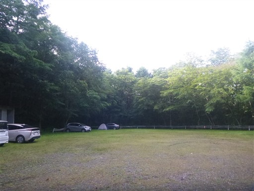
最初は林道を歩いていく。
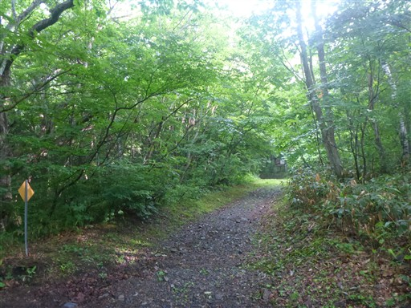
気づいたら林道はいつの間にか登山道になっている。
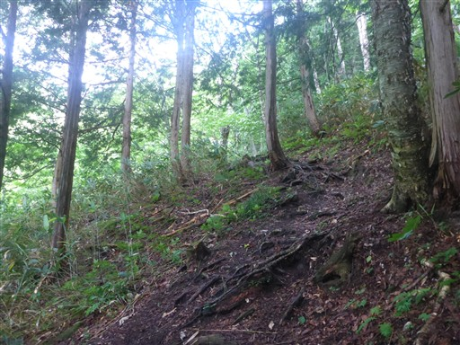
分岐点に到着。往路は左の道、復路は右の道を歩く。
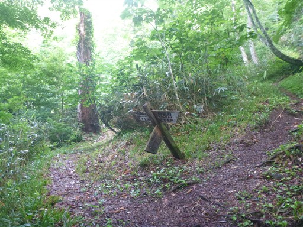
道を塞ぐ倒木。切れ目が入っているが切られていない。
途中で諦めたのだろうか？
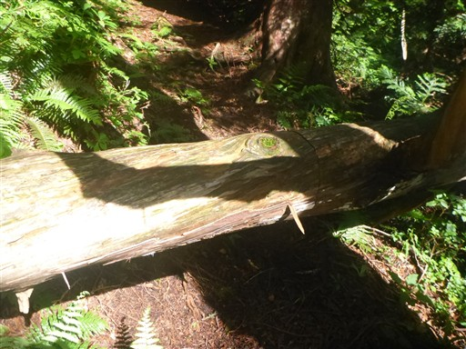
岩の庇の下に木簡が置かれている。
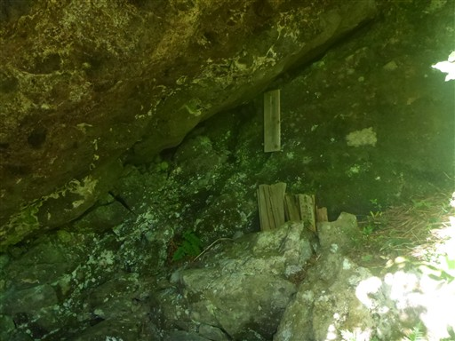
最初の鎖場が現れる。
この後の鎖場も同様だが、迂回路のある鎖場が多い。
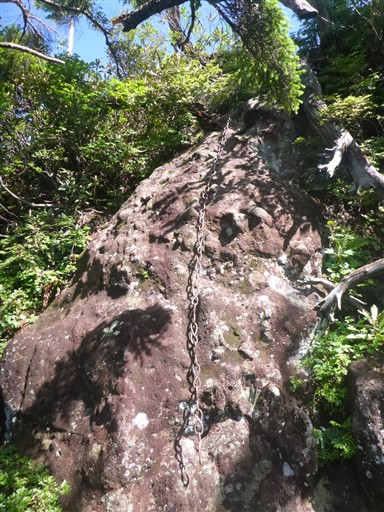
左手には立派な剣ヶ峰山の雄姿が見える。武尊山の衛星峰だ。
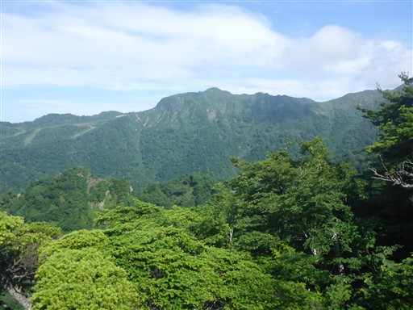
岩峰の上に立つと、目の前に前武尊と川場剣ヶ峰が見える。
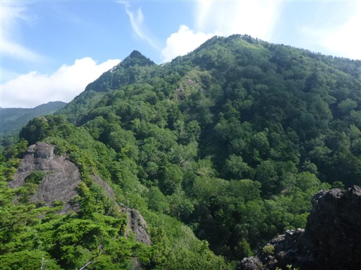
今度は鎖場を降る。
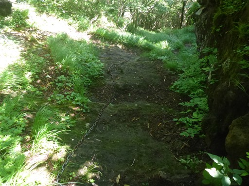
青空に向かう鎖場があったので登ってみる。
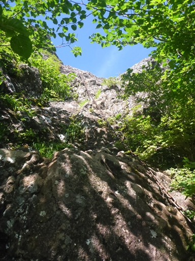
登った先は切れ落ちた岩峰の上。ここが不動岳のようだ。
しかし先に進む道はなく、反対方向への道しかない。
どうやら迂回路を来てしまったようで、正しくはこの鎖場を降るのが正解だったようだ。
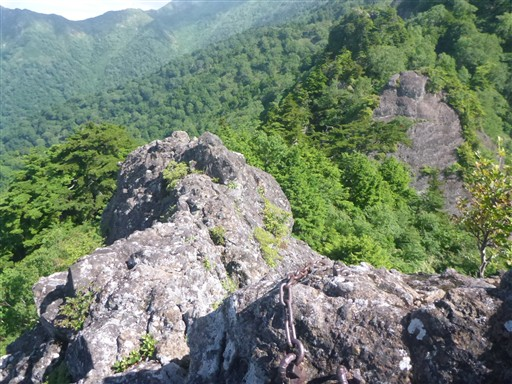
カニの横ばい。巨大な岩の右側をトラバースして進む。
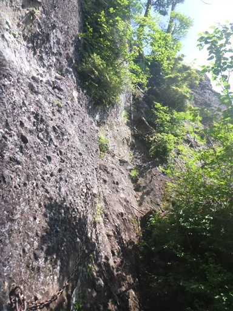
背すり岩。この鎖場が難しい。
手足をかける場所が少なく、何より狭い。
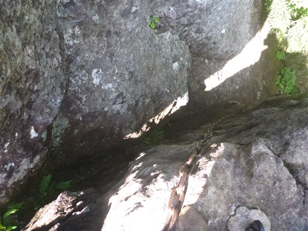
立派な石柱。
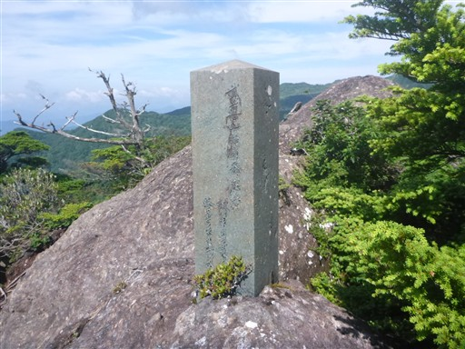
岩の下に空洞がある。潜れそうな岩だが陰気なのでやめておく。
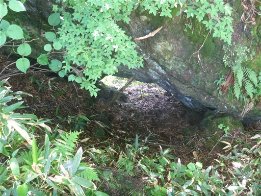
シラビソの枝の先端が新芽で黄緑色に染まっている。
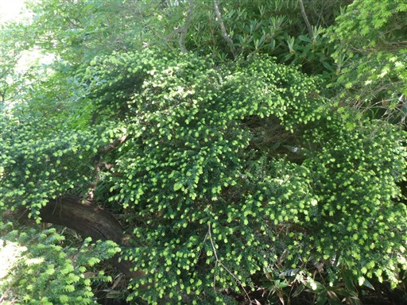
前武尊に到着。ヤマトタケルの像がある。それより後ろのボートが気になる。
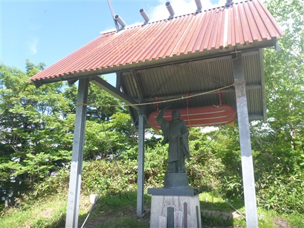
美しいベニサラサドウダンの花が咲いている。
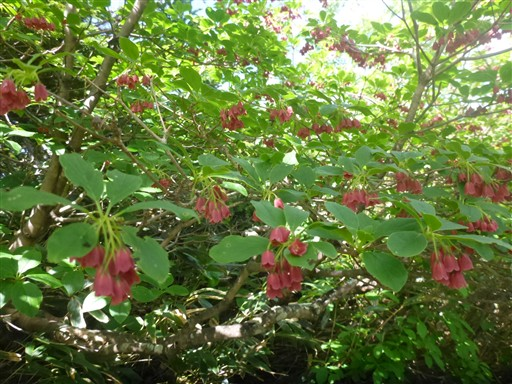
ここから武尊山まではあまり標高差の無い稜線歩き。
目の前に川場剣ヶ峰が聳える。
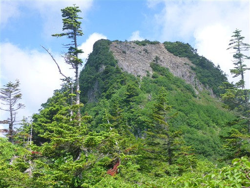
真下から見上げる川場剣ヶ峰。この山は右から巻いていく。
昔は登山道があったらしい。

本日の景色はぼんやり。
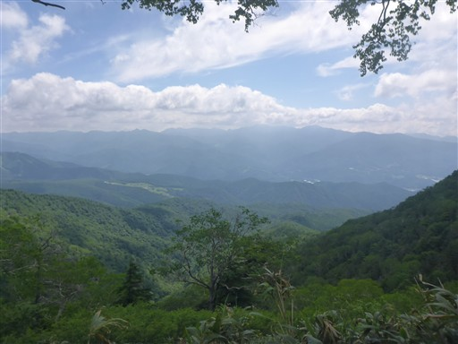
剣ヶ峰岩峰群の鞍部の標識。
ここからまっすぐ行くと岩場のコースなのだが誤って左の迂回路を進んでしまう。
帰りにこの場所に来た時にようやく気付いたが時すでに遅しだった。
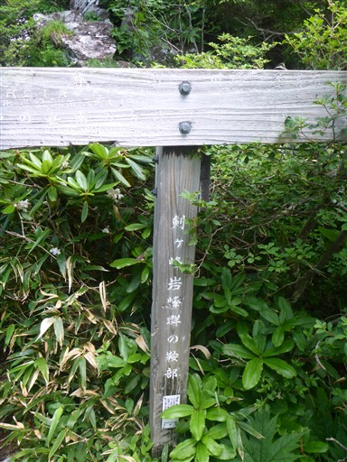
これから進む尾根道。正面が家の串、左端が目指す沖武尊だ。
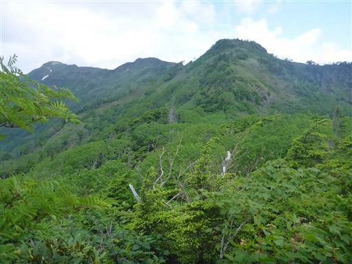
草（？）ぼうぼうの登山道。長くは続かない。
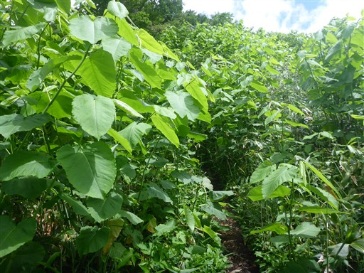
この時期はシャクナゲが満開だ。
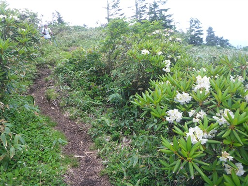
こちらはピンクのシャクナゲ。
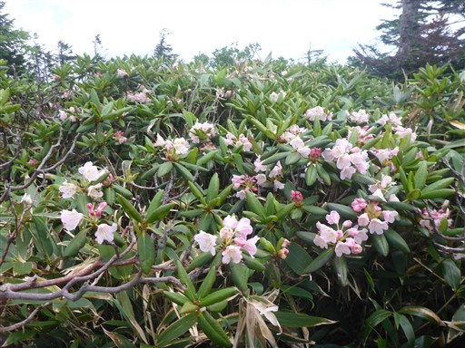
家の串に到着。小ピークだ。
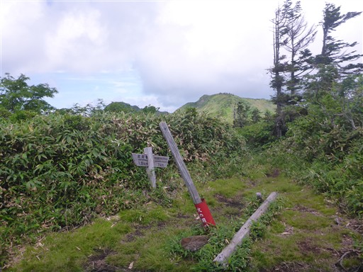
この辺りは岩尾根が続いている。
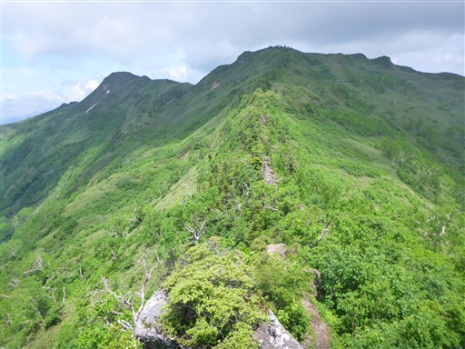
高度感はさほどないが、展望が良く楽しい岩場だ。
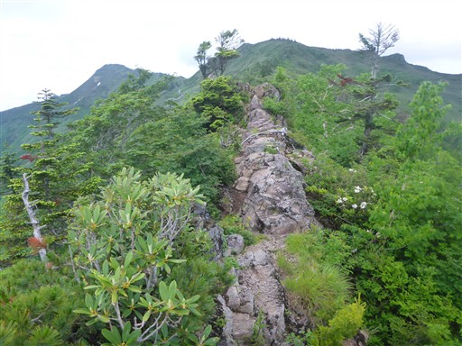
これはコケモモの花だろうか？
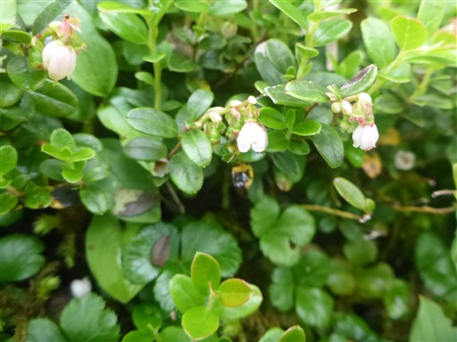
マイヅルソウ。
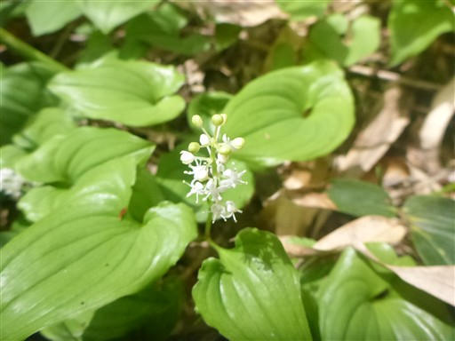
穂高牧場の道と合流。ここからは16年前と同じ道を辿る。
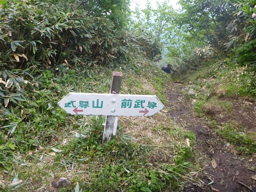
登山道は稜線の少し下に付けられている。
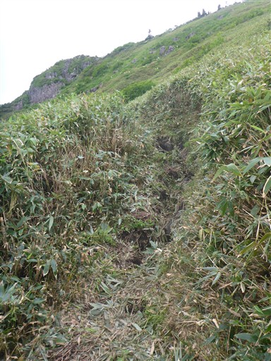
稜線上ではないので水場がある。チョロチョロと冷たい水が流れている。
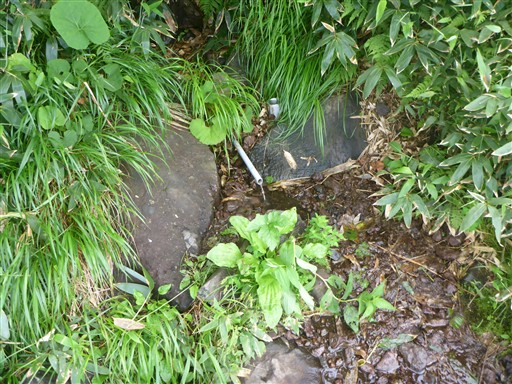
小さな池がある。
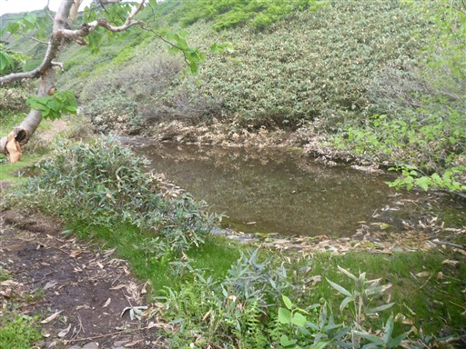
その先は雪渓。沢筋というより、二重山稜のような場所の間に広がる空間だ。
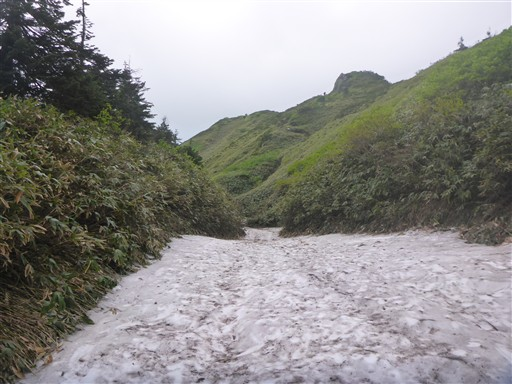
山頂直下。ここにもヤマトタケルの像がある。
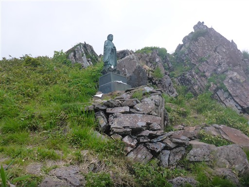
武尊山に到着。標高2158m。
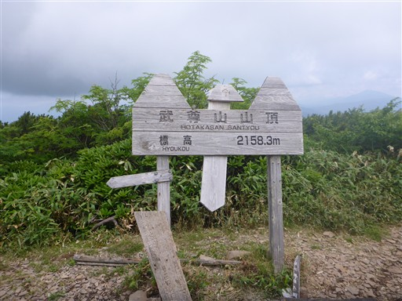
谷川岳方面。辛うじて見える程度だ。
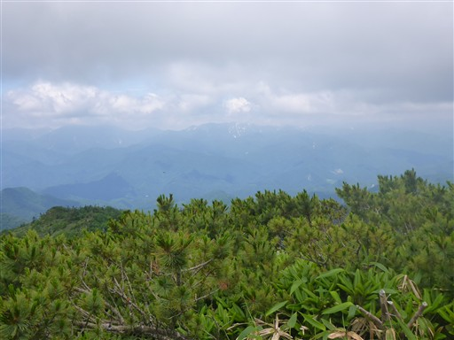
こちらは赤城山方面。
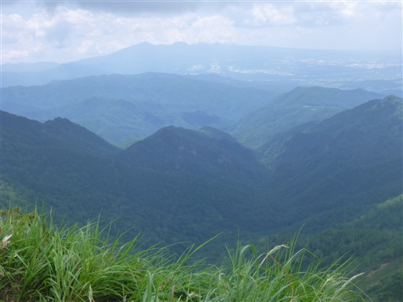
巨大な武尊山からは間近に山がなく、眺められるのは主に武尊山に属する山々だ。
こちらの目立つ山は剣ヶ峰山。こちらに続く登山道も魅力的だ。
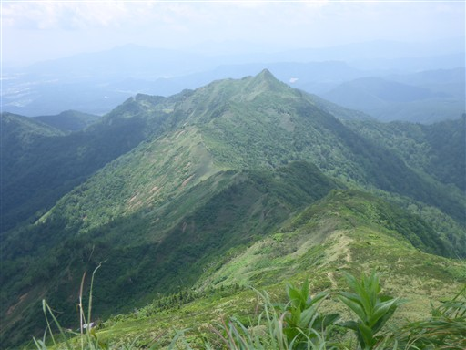
こちらは歩いてきた稜線。右端が川場剣ヶ峰だ。
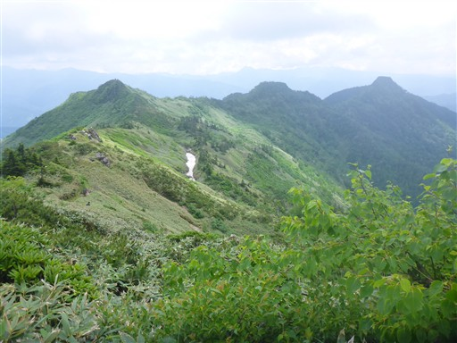
山頂はそこそこ賑わっているが、混雑はしていない。
ここで腰を下ろして昼食をとる。
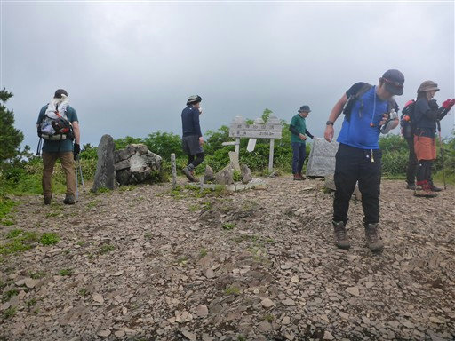
下山開始。コバイケイソウの花が咲いている。
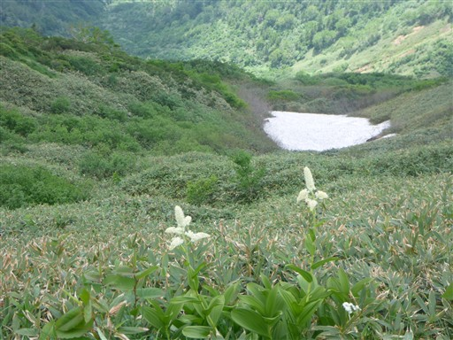
登りのときより視界が広がっている。見えているのは日光白根山だ。
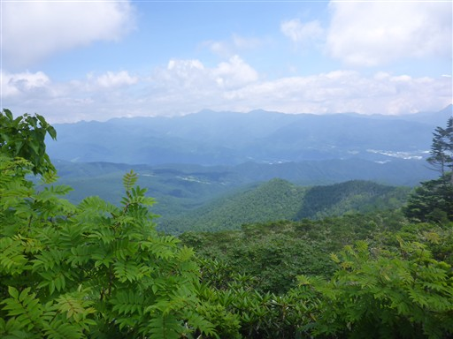
再び岩尾根。
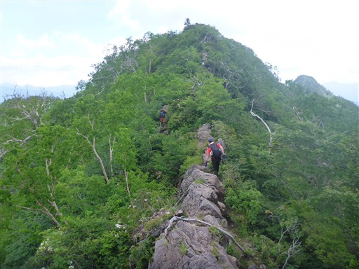
尾瀬の山々。左が至仏山、右が燧ヶ岳。
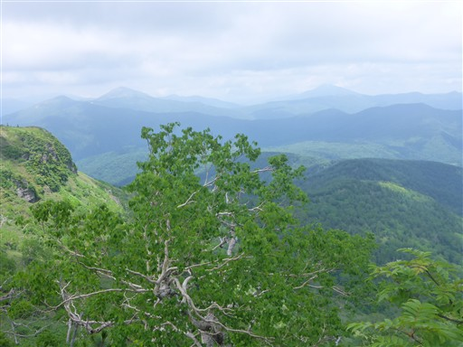
前武尊まで戻ってくる。ここで往路と道を変えて左の道に進む。
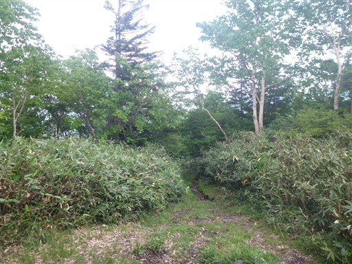
地蔵が祀られている。なんと屋根付きだ。
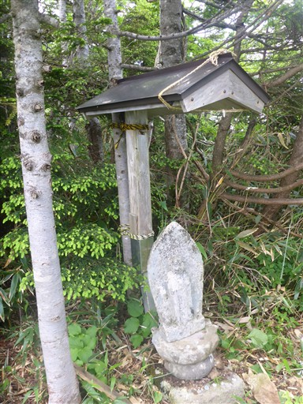
木に生えるキノコ。ツリガネタケだろうか？
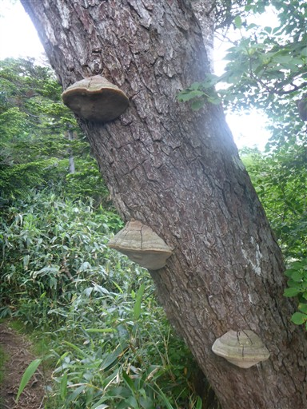
こちらの登山道にも鎖場がある。傾斜は緩いので難易度は低い。
日光白根山を眺める仏像。
オグナほたかスキー場のリフトが見える。冬には賑わうのだろう。
斜面に生える立派なヒノキ。
無事下山。
そこそこ歩きごたえがある山で、岩場を通る登山道は楽しかった。
ちょっと鈍い展望ではあったが、遠くの山々も見渡すことができ、充実した山行だった。